Books of the Series
- The Gunslinger
- The Drawing of the Three
- The Wastelands
- Wizards and Glass
- The Wind Through the Keyhole
- Wolves of the Calla
- Song of Susannah
- The Dark Tower
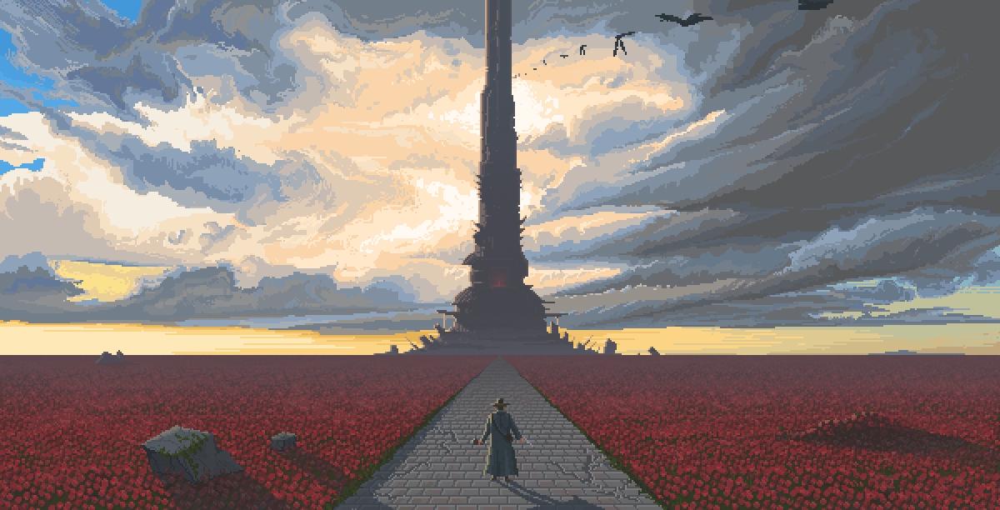
The Dark Tower is an eight-book series written by Stephen King. Written over the span of 30 years, it is King's self-proclaimed magnum opus. This literary monument follows the path of Roland the Gunslinger on his journey to the dark tower, in search of what is hidden inside. The journey is a long one, and Roland will meet a great number of both friends and enemoies. It begins in a desert, with the Gunslinger following a mysterious man in black.
Roland Deschain is the protagonist and hero of The Dark Tower Series. He is the son of Steven and Gabrielle Deschain and is the last of a long line of "gunslingers", peacekeepers and diplomats of Roland's society. He is also the final human descendant of Arthur Eld. His image and personality are largely inspired by the "Man with No Name" from three of Sergio Leone's westerns, though his quest and many of his personal and internal conflicts are drawn from Robert Browning's poem Childe Roland to the Dark Tower Came.
Jake is a smaller, blonde version of Roland. He is described as possessing sharp senses, fearless demeanor and desire to find where he belongs on the quest for the Dark Tower. Even without directions from Roland, Jake Chambers seems to have strong survivor instinct in the mix of the worlds. Due to the fact that he was killed by the man in black, he often gets overwhelmed about his role in the world and takes potential signs and hints from the universe very seriously. He finds it very important that the ka-tet be open and honest with one another.
Susannah Odetta Holmes Dean, previously known as both Odetta Holmes and Detta Walker, is one of the main protagonists in The Dark Tower Series. Introduced in The Dark Tower II: The Drawing of the Three, she continues as a main character for the remainder of the story.
Edward Cantor "Eddie" Dean first appears in The Drawing of the Three, in which Roland encounters three doors that open into the New York City of our world in different times. Through these doors, Roland draws companions who will join him on his quest, as the Man In Black foretold. The first to be drawn is Eddie Dean, a drug addict and a first-time cocaine mule. Eddie lives with his older brother and fellow junkie Henry, whom Eddie reveres despite the corrupting influence Henry has had upon his life. It is because of Eddie's heroin addiction that he is termed 'The Prisoner', and that is what is written upon the door from which Roland draws him.
 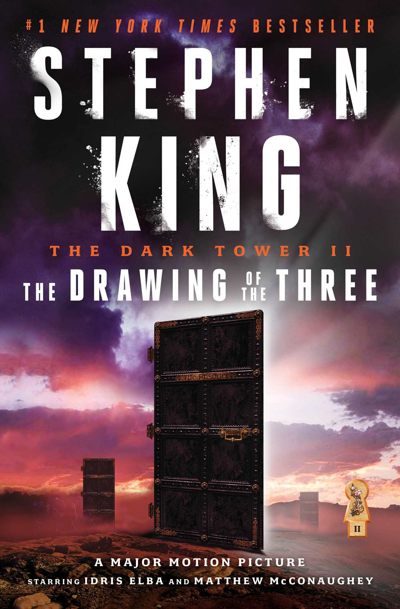
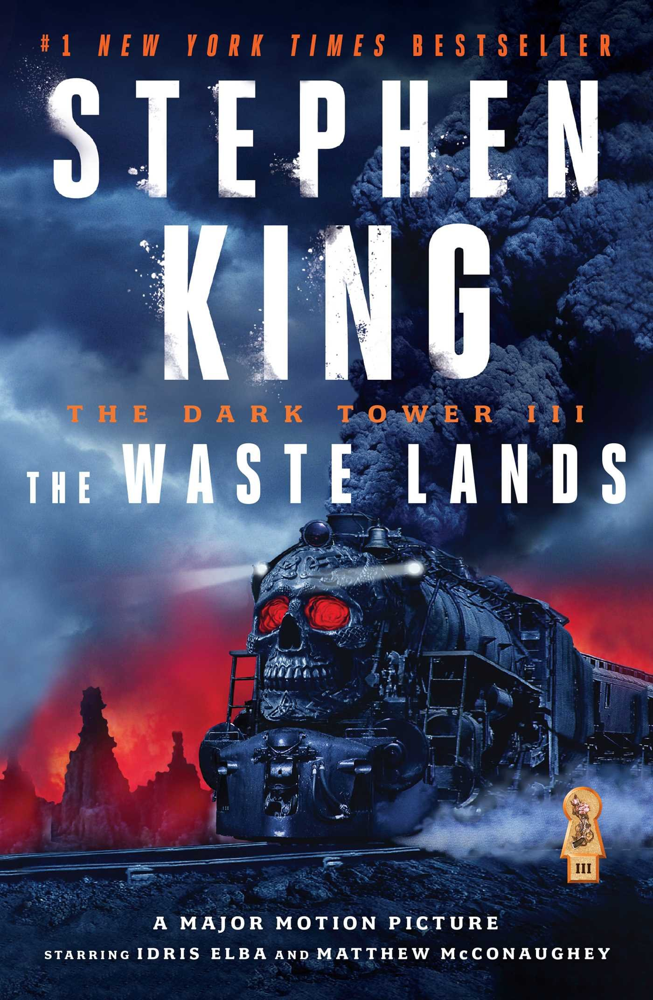
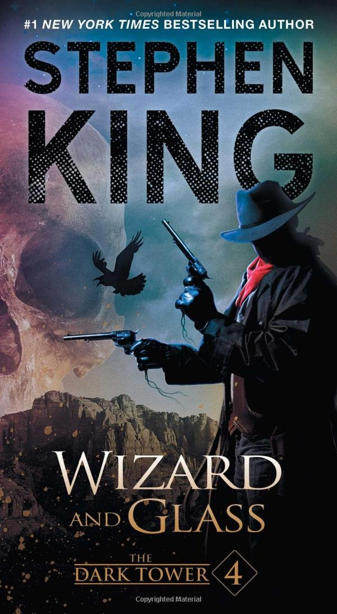
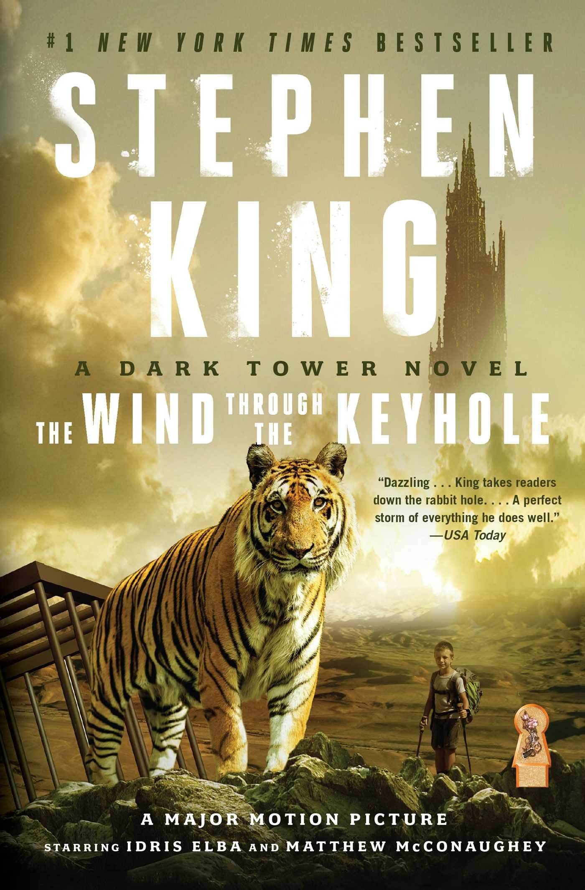
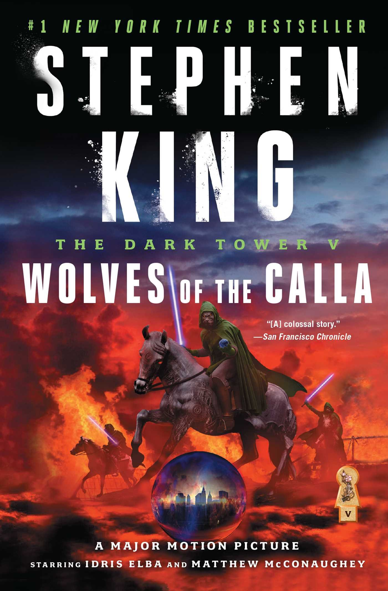
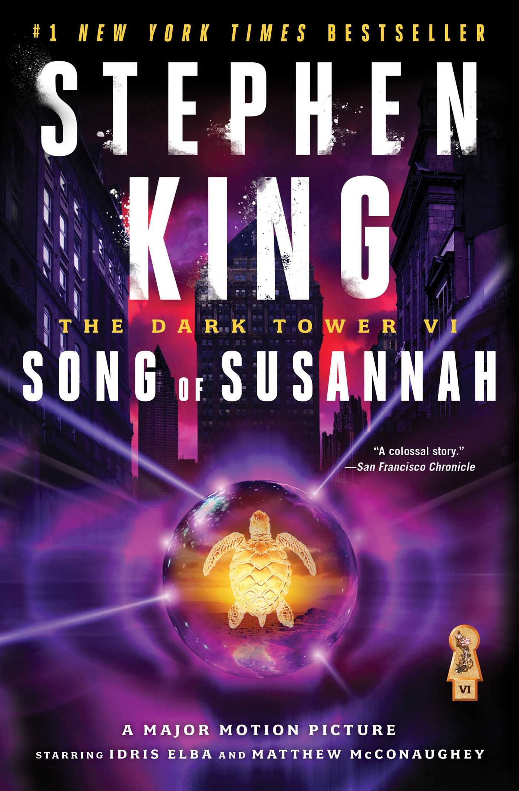
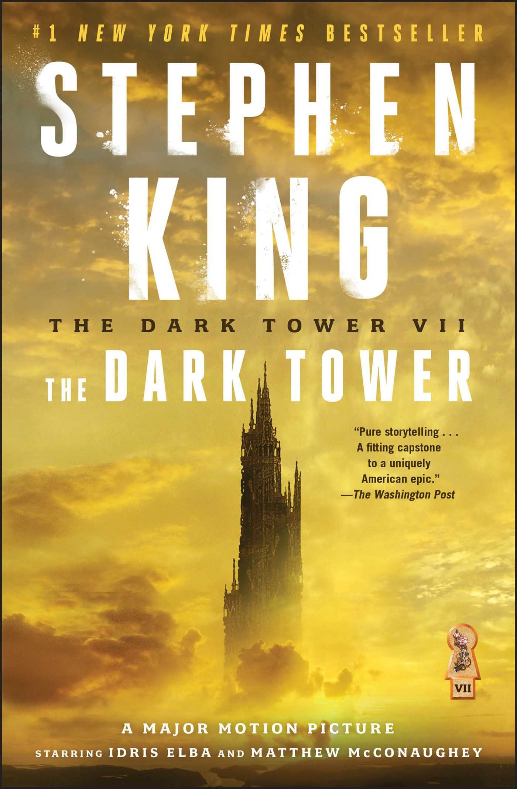
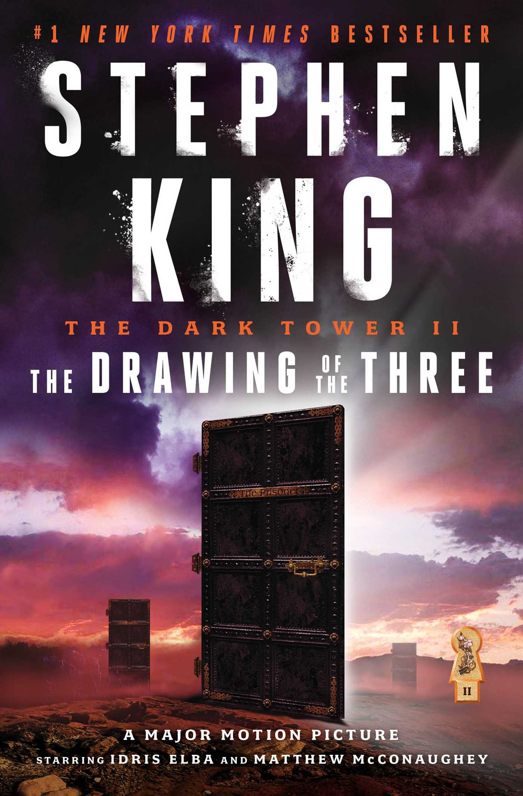
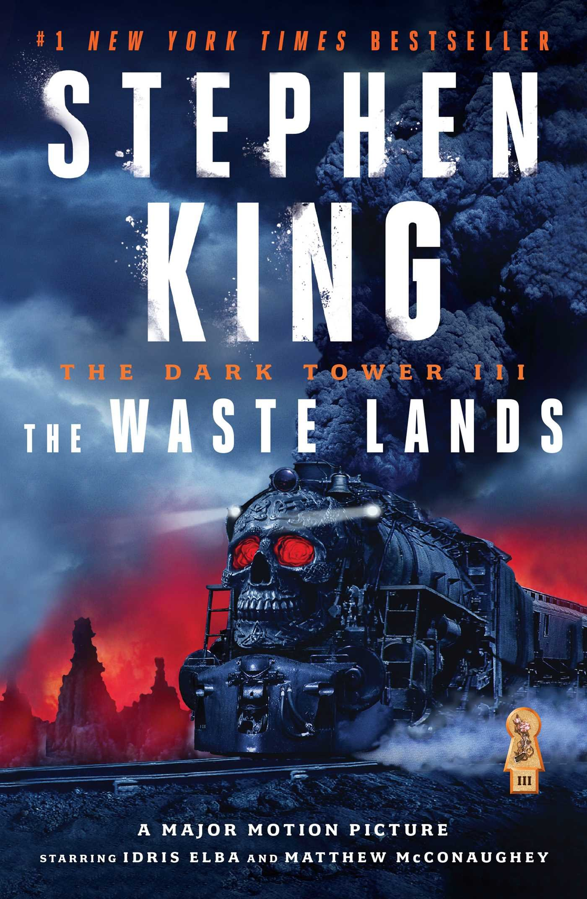
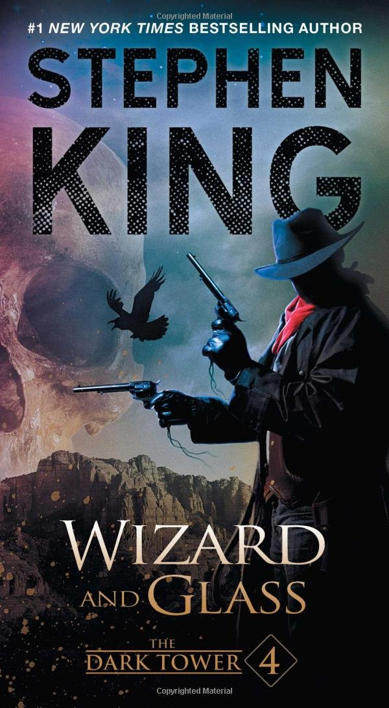
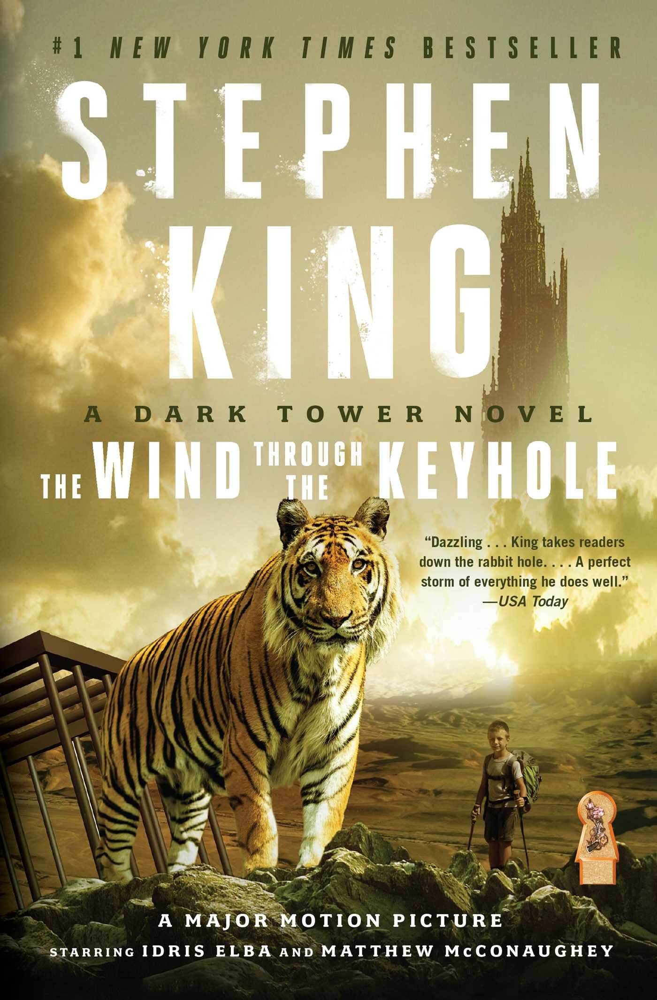
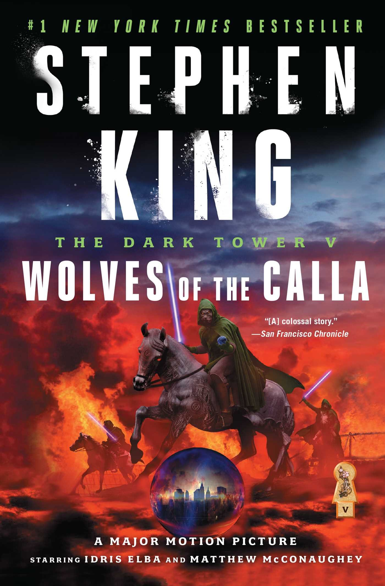
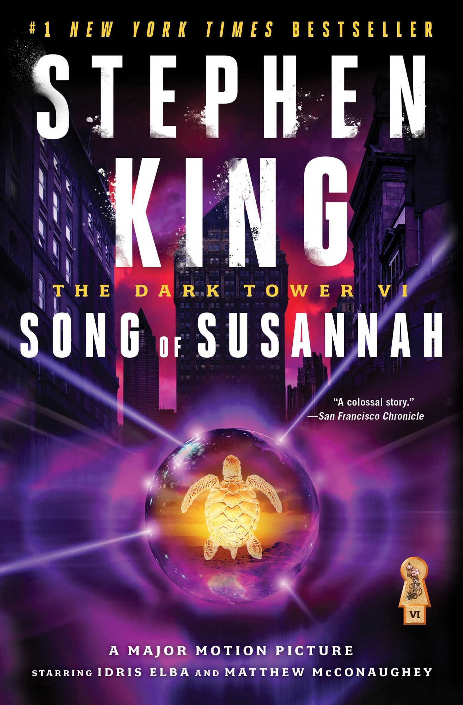
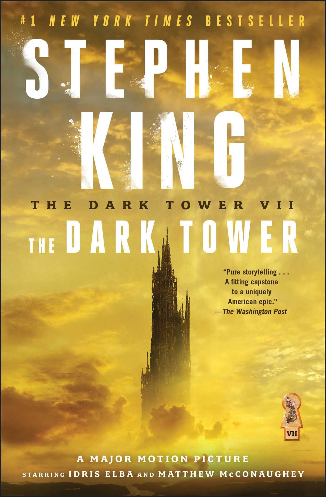